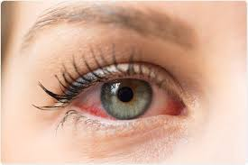

Alergia jest niewłaściwą reakcja układu odpornościowego człowieka na alergeny, które dosyć licznie występują w środowisku. Dolegliwość ta uważana jest za najczęściej występującą we współczesnym świecie. U zdrowych osób alergeny nie powodują żadnych objawów ani uczulenia. Układ odpornościowy odpowiedzialny jest za kontrolowanie, czy obce cząsteczki mogą negatywnie wpłynąć na zdrowie i podejmuje ewentualne działania, aby chronić organizm. Zetknięcie się organizmu z określoną substancją nie powoduje od razu objawów uczulenia. Następuje to przy kolejnym kontakcie z alergenem.
Najczęstsze rodzaje alergii
1. Katar sienny, znany również jako alergiczny nieżyt nosa to ostry, alergiczny katar, który występuje głównie wiosną lub latem. Powodują go głównie pyłki niektórych roślin oraz grzyby i ich zarodniki.
2. Pokrzywka, czyli pojawienie się na skórze bąbli pokrzywkowych powodujących nieznośny świąd.
3. Wstrząs anafilaktyczny jest najcięższą postacią reakcji alergicznej. Występuje nagle i polega na zaburzeniach ze strony licznych narządów.
4. Alergia pokarmowa występująca najczęściej u dzieci. Może się jednak pojawić nawet u osoby 40 – letniej. Najczęściej przyczyną jest uczulenie na białka mleka krowiego.
Alergia - ogólne objawy

Objawy alergii zależą od jej rodzaju i stężenia alergenu. Alergia pokarmowa może objawiać się w sposób łagodny - występują wówczas wzdęcia, okresowe wymioty i/lub biegunki. W cięższych przypadkach może natomiast przypominać ostre zatrucie.
Kolejny kontakt z alergenem może prowadzić nawet do wstrząsu anafilaktycznego, którego najczęstszym objawem jest szybko pojawiający się rumień, katar i zatkanie nosa, wysypka, zaczerwienie skóry, opuchlizna lub bąble. U niektórych pacjentów reakcja alergiczna kończy się ostrym bólem brzucha i biegunką. Należy pamiętać, że wstrząs anafilaktyczny bywa bardzo niebezpieczny, ponieważ dochodzi do natychmiastowego spadku ciśnienia i tym samym zagrożenia życia.
Pozostałe objawy pojawiające się w przebiegu alergii to:
1. Katar.
2. Duszności.
3. Kichanie.
4. Zaczerwienienie i swędzenie oczu.
5. Łzawienie oczu.
6. Opuchlizna.
7. Kaszel.
Jak rozpoznać alergię?
W odróżnieniu alergii od innych dolegliwości pomaga czas oraz okoliczności jej pojawienia się, gdyż symptomy alergii pojawiają się tylko na skutek kontaktu z alergenem. W ustaleniu czynnika odpowiedzialnego za alergię pomaga:
1. Test skórny.
2. Badanie serologiczne.
3. Próba ekspozycyjna.
4. Dieta eliminacyjna.
5. Badanie spirometryczne.
Leczenie alergii
Niestety, niemożliwe jest całkowite wyleczenie alergii, zwykle trwa ona do końca życia, niekiedy tylko objawy mogą ulec wygaszeniu. W sytuacji nasilenia objawów wprowadzane jest leczenie farmakologiczne, a chorym zaleca się unikanie kontaktu z alergenami. W przypadku uczulenia na pyłki roślin unikanie alergenu jest to bardziej problematyczne. W celu wyleczenia alergii stosuje się immunoterapię swoistą. W tym przypadku odczulanie ma na celu przede wszystkim zniesienie reakcji chorego na alergen oraz zapobieganie rozwinięcia astmy.
Unikanie alergii
Nie w każdym przypadku da się uniknąć alergii. Można jednak zmniejszyć szansę na jej pojawienie się przez:
1. Rezygnację z obić sprzyjających tworzeniu się kurzu.
2. Zapoznanie się z kalendarzem pylenia roślin.
3. Uzupełnienie diety w witaminę C.
4. Poddanie się testom alergicznym.
5. Dbaj o czystość pomieszczeń w których przybywasz.